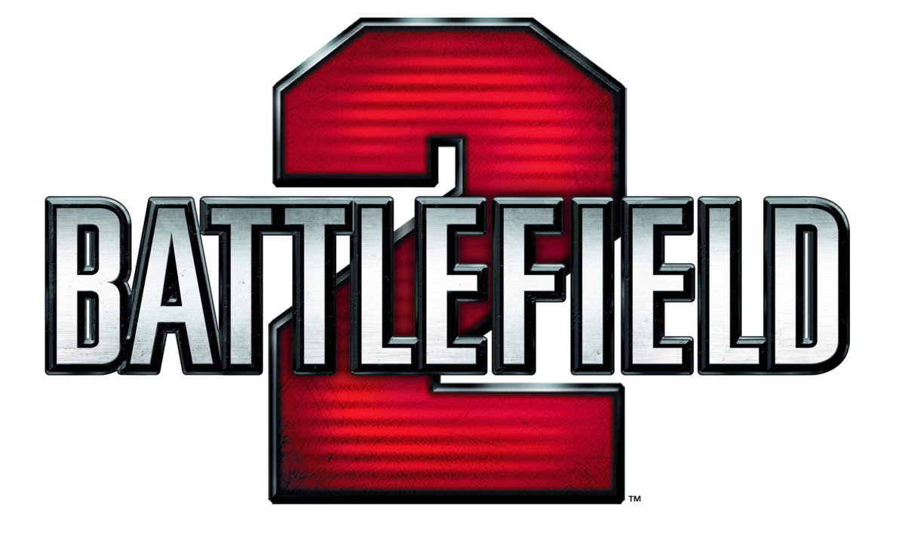

Select A Battlefield!
Select A Game Down Below!
Summary
"Battlefield 2" is a multiplayer-focused first-person shooter set in a modern-day conflict. Players engage in large-scale battles between the United States Marine Corps and the Middle Eastern Coalition across various maps. It introduced features like Commander mode and class-based gameplay. The game received critical acclaim for its innovation and strategic depth, becoming a popular multiplayer shooter.
More Detail
"Battlefield 2" is a landmark multiplayer first-person shooter released in 2005, renowned for its innovative gameplay and large-scale battles. Set in a modern-day conflict scenario, players engage in intense warfare as part of either the United States Marine Corps or the fictional Middle Eastern Coalition. One of its defining features is the introduction of the Commander mode, allowing one player on each team to take on a strategic role. Commanders have access to a top-down view of the battlefield and can issue orders, call in airstrikes, and provide vital support to their team, adding a layer of strategic depth to the gameplay. The game also introduced a class-based system, offering players the choice between different roles, each with its own unique abilities and equipment. Players can select from classes like Assault, Medic, Engineer, and Support, each fulfilling specific roles on the battlefield and encouraging team cooperation. Multiplayer matches revolve around capturing and controlling key strategic points on the map while depleting the enemy team's tickets. The game offers various game modes, including Conquest, where teams fight for control of key locations, and the iconic "Titan" mode, where players attempt to destroy the enemy's massive airborne warship while defending their own. "Battlefield 2" received widespread acclaim for its expansive maps, dynamic gameplay, and emphasis on teamwork. It became a staple title in the multiplayer shooter genre and fostered a dedicated community of players who continue to enjoy the game to this day. Additionally, the game received several expansion packs that introduced new maps, vehicles, and gameplay mechanics, further enriching the player experience.